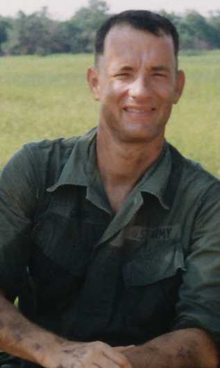

Tom Hanks como Forrest Gump
Tom Hanks interpreta a Forrest, el protagonista de la historia. Su personaje se caracteriza por su sinceridad, su forma simple de ver el mundo y su capacidad de atravesar situaciones importantes sin perder su manera de ser. A lo largo de la película, Forrest participa de acontecimientos históricos, sirve en el ejército, practica tenis de mesa, crea una empresa de camarones y recorre Estados Unidos corriendo. Aunque logra reconocimiento y éxito económico, sus decisiones continúan guiadas principalmente por su lealtad hacia las personas que quiere, especialmente Jenny, su madre, Bubba y el teniente Dan.